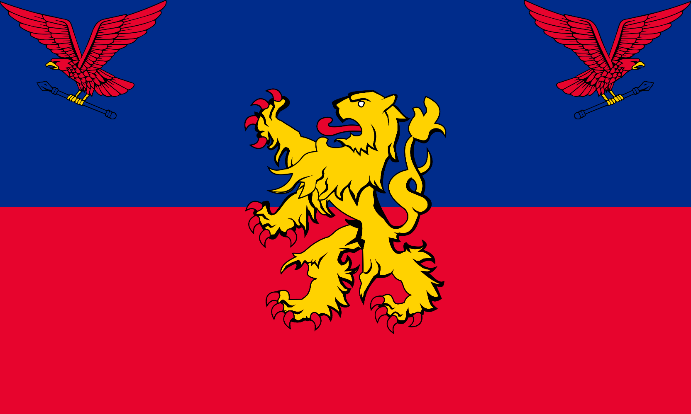

Государственные символы
Флаг Княжества Люксенштейн.
Две горизонтально расположеные полосы синего и бордового цвета с соотнешением 3:5. По середине расположено изображение льва в цвета флага. По верхним углам расположены 2 орла которые держут в лапах копьё.
Синий — цвет грозового облака, бордовый — цвет тлеющих угольков в камине, золотой цвет льва показывает нашему народу, что страна и князь объединены сердцем и духом.
Герб Княжества Люксенштейн.
Щит в полоску окрашеный синим и бордовым цветом, ( 9 полосок ), по середине расположеный лев. над щитом сверху расположенна корона.
Синий — цвет грозового облака, бордовый — цвет тлеющих угольков в камине, золотой цвет льва и основания короны показывает нашему народу, что государство и князь объединены сердцем и духом.
Служебный флаг Люксенштейна
Две горизонтально расположеные полосы синего и бордового цвета с соотнешением 1:1, по краям окантованный желтой линией. По середине расположен герб Люксенштейна.
Используется в качестве государственного знака Премьер-министра а также эмблемы Княжеской семьи
Государственный гимн Люксенштейна
Прислоняется Люксенштейн
К высотам мира.
Эта любимая родина,
Дорогое отечество,
Бога мудрая рука
Для нас позаботилась.
Эта любимая родина,
Дорогое отечество,
Бога мудрая рука
Для нас позаботилась.
Прислоняется Люксенштейн
Высоко живи, Люксенштейн,
Счастливо и верно.
Высоко живи, князь страны,
Высоко наше отечество,
Посредством мира
Объединено и свободно.
Высоко живи, князь страны,
Высоко наше отечество,
Посредством мира
Объединено и свободно.
Исполняется под мелодию британского гимна «Боже, храни короля»
Уголовный кодекс
Здесь будет информация об Уголовном кодексе Княжества Люксенштейн.
Карты
Здесь будет информация о картах Княжества Люксенштейн.